“Partinin idealleri bana çok yakın geldi. Tüm hayatım boyunca bu ideallere uygun yaşadım. Aslına bakılırsa bu ideallerin benim için İncil’deki on emirden farkı yok. Hiç bir zaman da bu düşüncelerimi değiştirmeyeceğim.”
Tereşkova (Komünizme bağlılığını tanımlarken)
İkinci Dünya Savaşı’nı sona erdiren ve Atom Çağı’nı başlatan iki atom bombası, arkasında 100 bine yakın ölü bırakmıştı. Savaş sonunda Almanya, Doğu ve Batı olarak iki parçaya ayrılmış, Doğu Avrupa ülkelerinden Polonya, Romanya, Macaristan, Çekoslovakya, Bulgaristan ve Arnavutluk’ta komünist rejim kurulmuş, Çin’de yıllardan beri süren komünist ihtilal tamamlanmıştı. Batı bloğunda kalan ve tercihlerini demokrasiden yana yapanlarsa, Amerika’nın manevi liderliğinde bir araya gelmişti.
Amerika ve Rusya’nın liderliğindeki iki kutuplu dünya, gardını almış, iki blok arasında bir soğuk savaş başlamıştı. Uzay yarışı da başından itibaren Amerika ile Rusya arasındaki bu Soğuk Savaş’ın ve buna paralel ilerleyen silahlanma yarışının dünya dışına taşan yüzü olmuştu. Rakip ideolojilere sahip bu iki blok, her ne pahasına olursa olsun, uzayda dahi bile olsa, bu rekabetten üstün çıkmalıydı. Ve gözler Ay’a çevrildi...
Başkan Kennedy “60’lı yıllar bitmeden Ay’a gideceğiz!” temalı meşhur nutkuyla Amerikan halkını Ay’a ilk ulaşan ulus olma istikametinde harekete geçirmişti, ama uzaya ilk uyduyu gönderen Ruslar da boş durmuyordu. Amerikalılara yaşatacakları bir küçük sürprizleri daha vardı. Beyaz Saray’dakiler 16 Haziran 1963 sabahı aldıkları haberle bir kez daha geride kalmanın acısını yaşıyorlardı: Ruslar, uzaya ilk kadını göndermişlerdi!
Kimdi bu kadın?
Fabrika işçisiydi, uzaya çıkan ilk kadın oldu
Dünyayı dışardan gören ilk kadın unvanını alan Valentina Vladimirovina Tereşkova’nın hikâyesini cazip kılan şey, tekstil işçiliğinden kozmonotluğa giden ilginç bir yol izlemiş olmasıydı! Proleter imparatorluğu Sovyetler Birliği’nin ilk kadın kozmonotunun da bir emekçi olması, hoş bir tesadüftü doğrusu...
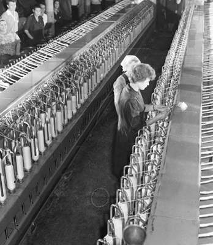
Tekstil fabrikasındaki işçilik günlerinde
Tereşkova, 6 Mart 1937’de Rusya’nın Yaroslavl bölgesinde, üç çocuklu ailenin ikinci çocuğu olarak dünyaya geldiğinde, babası traktör şoförlüğü, annesi bir tekstil fabrikasında işçilik yapıyordu. Küçük kız, Rusya’yı yiyip tüketen savaş yüzünden 8 yaşına gelinceye kadar okul yüzü göremedi. 17 yaşına geldiğinde de okulu bırakmak zorunda kaldı. Tüm ülkeyi pençesine alan fakirlik, onun ailesini de vurmuştu. Çalışmak zorundaydı. Aile bütçesine destek olmak için tekstil fabrikasına girdi. Kir pas içinde elleri, terli alnı ama yüksek idealleri olan bir işçi olmuştu. Tıpkı Rusların sağa sola çiziktirdikleri, genellikle mozaikten yapılma, eli orak çekiçli devrimci işçileri resmeden tabloların birinden fırlamışçasına...
Gözü yükseklerdeydi. Hayattan, ‘emekçiliği’ aşan, daha büyük beklentileri vardı. Okula gidemese de mektupla eğitimine devam etti ve aynı dönemde hobi olarak Yaroslavl’daki DOSAAF Havacılık Kulübü’nde paraşüt eğitimi almaya başladı. Kulüp tabii ki Kızıl Ordu’nun gençlik ünitelerinden biriydi! İlk atlayışını 21 Mayıs 1959’da yaptı. Dünyayı yukarıdan, kuşlar gibi özgürlüğün tadını çıkartarak izlemek, genç kadını çok heyecanlandırmıştı. Aynı dünyayı dört yıl sonra bu kez uzaydan izleyeceğini rüyasında görse, muhtemelen kendisi de inanamazdı...
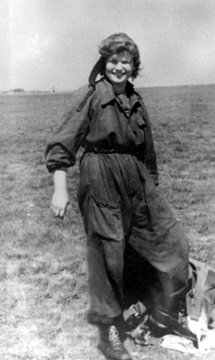
Henüz fabrika işçisiyken paraşüt kursunda
İlk atlayışının ardından Tekstil Fabrikası Çalışanları Paraşüt Kulübü’nü kurdu. İki yıl geçmeden, amirlerinin dikkatini çekmiş ve mahalli Komsomol’un (Komünist Partisi Gençlik Kolu) sekreterliğine getirilmişti. Bu arada boş durmamış, yün eğirme teknolojisi uzmanlığı sertifikası da almıştı. Genç kadının 24. yaş gününü kutladığı günlerde yaşanan bir gelişme, dünyayı hayretler içinde bırakırken Rusya’yı da bayram yerine çevirmişti: Gagarin uzaya çıkmıştı!
Sovyetler Yuri Gagarin’i uzaya göndererek, başta rakibi Amerika olmak üzere, tüm dünyayı şok etmişti. Ama bu yetmezdi. Daha başka şeyler de yapılmalı, komünist sistemin nelere kadir olduğu tüm dünyaya gösterilmeliydi! Aynı günlerde Rus kozmonotların baş eğitmeni Kamanin, Rus uzay programının mimarlarından ve uzay gemisi tasarımcısı Sergey Korolyov’un kapısını kadın kozmonot fikriyle çaldı. Acaba uzaya bir kadın gönderebilirler miydi? Neden olmasındı ki? Madem erkek dayanmıştı, o halde ‘devrimci’ bir kadın da dayanabilirdi. Her ne kadar işin uzmanları o zamanki şartlarda kadınların bu işe uygun olmadığını iddia etseler de Sovyet rejiminin lügatinde‘imkânsız’ yazamazdı! Korolyov’un aklı bu parlak fikre yatmıştı. Hemen emrini verdi: “Aralarından beşinin seçileceği 50 uygun aday bulun!”
Adayların pilot eğitimi almış olması gerekmiyordu. Zira Rusların insanlı uçuşlar için kullandığı Vostok (Doğu) uzay aracı tamamen otomatikti ve kozmonotun uçaktaki herhangi bir yolcudan farkı yoktu. Bununla birlikte paraşüt becerisi, tartışılmaz bir gereklilikti. Uzay aracı dönüşte atmosfere girdiğinde, kozmonot otomatik olarak araçtan fırlatılacak ve kendi kullandığı paraşütle yere inecekti. Böylelikle temel şartlar belirlendi. Adaylar, 30 yaşından küçük, 1.70’ten kısa ve 70 kilodan hafif; fiziksel olarak sağlam ve tabii bir de ‘katıksız komünist’ olacaktı. Kamanin, DOSAAF’ın kurucu üyelerinden biriydi ve aradıkları kişiyi nerede bulabileceklerini gayet iyi biliyordu.
DOSAAF kayıtları tarandı ve şartlara uyan 400 kadar isim tespit edildi. Bunlardan 40’ı yazılı sınavı geçerek, fiziksel ve psikolojik testler için Moskova’ya çağırıldı. Bu arada Tereşkova, elemelerden başarıyla çıksa da babası hakkındaki olumsuz bir sicil kaydı, durumunu şüpheli hale getirmişti. Buna karşın Komsomol’daki gayreti dikkate alınınca, genç kız, 16 Şubat 1962’de Tatiana Kuznetsova, Irina Solovyova, Valentina Ponomareva ve Zhanna Yerkina ile birlikte uzayın kapısını tıklatmaya aday 5 kadından biri olarak sahneye çıktı.
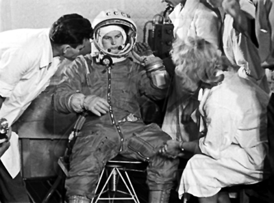
Rus doktor ve uzmanlar, Tereşkova’yı tarihi yolculuğuna hazırlıyor.
İlginçtir, diğer 4 aday, her açıdan Tereşkova’dan daha şanslıydı. Aralarında test pilotu da vardı, dünya paraşüt şampiyonu da! Buna karşın ‘yoldaş’ Tereşkova’nın tek avantajı, fiziki dayanıklılık açısından beşlinin en iyisi olmasıydı. Proleter geçmişi ve üstüne üstlük, babasının olumsuz sicil kaydına rağmen faşist Nazilere karşı savaşırken ölmüş olması, artı hanesine yazılacak, diğer adaylarla arasındaki dengeyi sağlayacaktı.
Yerçekimsiz uçuşlar, merkezkaç, izolasyon ve psikolojik testlerin yanı sıra uzay gemisi mühendisliği ve roket teorisi konularında eğitim gören adaylar, MiG-15UTI jetleri ile pilotaj eğitimi de almışlar, yetmemiş, bir de 120’şer kez paraşütle atlamışlardı! İlginçtir, tüm bu sıkı eğitime karşın işin başındakiler bir kadının uzaya çıkabileceğinden ve o psikolojik ve fiziksel yükü kaldırabileceğinden emin değillerdi. Sovyet yönetimi uzaya kadın çıkarma işlemini, salt bir ilke daha imza atacak olmaları sebebiyle, devasa bir propaganda fırsatı olarak görüyordu.
Eğitimlerini tamamlayan kadınlara, aynı zamanda Sovyet Hava Kuvvetleri’nden teğmenlik rütbesi verilmiş, kahramanımız Tereşkova, aynı günlerde Komünist Partisi’ne asil üye olarak kabul edilmişti. 1962 Mayısı’nda Rus kozmonotları German Titov and Kamanin, Washington’u ziyaret etti ve Amerikalı astronot John Glenn tarafından barbekü partisine davet edildi. Glenn, laf arasında uzaya kadın göndermeyi planladıklarından bahsedince, Kamanin, Moskova’ya mesaj uçurmakta gecikmedi: “Dikkat, Amerikalılar da aynı hedef üzerinde çalışıyor, elimizi çabuk tutalım!”
Kasım 1962’ye gelindiğinde kendilerine en çok şans verilen adaylar Ponomaryova ve Tereşkova’ydı. Herkesin aklındaki soru aynıydı: Uzaya acaba hangisi çıkacaktı? Ponomaryova test performansı bakımından daha iyiydi, ama bağnaz komünist seçici kurulunun sorularına ‘uygun’ cevaplar verememişti. Sözgelimi “Hayattan beklentin nedir?” sorusuna “Neyi verebilirse almak istiyorum” gibi oldukça ‘kapitalist’ bir cevap vermiş, oysa Tereşkova aynı soruyu “Komsomol’a ve Parti’ye katıksız bir şekilde hizmet etmek” şeklinde cevaplayarak tribünlerden alkış almıştı. Ponomaryova’nın sigara içen kadınların da ahlaklı olabileceğini savunması ve eğitim esnasında eskortsuz şehir turlarına çıkması, kendisine eksi puan olarak döndü.
Öte yandan Rus uzay kurmayları, Amerikalılara yaşatacakları şokun şiddetini daha da arttırmak için aynı anda iki kadın kozmonotu, komuta ve uzay yürüyüşünden oluşan daha karışık bir görev planıyla uzaya göndermek istiyorlardı. Korolyev bunun için Ponomaryova’nın komutanlık becerisine, Solovyova’nın ise cesaretine ve gücüne güveniyordu. Bunlardan daha az yetenekli olan Tereşkova, onun gözünde ancak en son seçenekti. Ama ülkedeki her konuda olduğu gibi bu konuda da nihai seçimi yapacak olan, Komünist Partisi Genel Sekreteriydi ve Nikita Kruşçev’in parmağı Tereşkova’yı işaret etti. Çünkü ona göre Tereşkova ideal Sovyet kadınının özelliklerini taşıyordu: “Güvenilir bir komünist, ortalama bir aileden gelen bir işçi ve ‘iyi’ bir kız.” Ve hepsinden önemlisi de uzaydan sağ dönerse elde edeceği şöhrete uygun bir cazibesi vardı! Dünya basınına iyi poz verebilecek bir kahraman fikri kulağa oldukça hoş geliyordu. Genç kadın tarihe doğru devasa bir adım atmıştı...
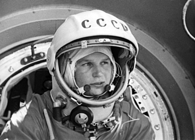
Kapsülün kapısında, belki de bir daha dönemeyeceği dünyaya son kez bakıyor.
3...2...1: ‘Martı’ uzayda!
16 Haziran 1963’te Vostok roketi ve Chaika (Martı) telsiz koduyla uzaya gönderilen Tereşkova, yerküreyi dışarıdan gören ilk kadın oldu. Uçuş esnasında Korolyev’in Tereşkova’nın performansından memnun olmaması nedeniyle, daha önceden planlananın aksine, uzay aracının kontrolünü ele almasına izin vermediği söylendi. İddialara göre genç kadın uzaydayken psikolojik çöküntü yaşamıştı. Öyle ki Kamanin, daha sonra yayınlanan günlüğünde, resmi basın bültenine Tereşkova’nın ruh halinin iyi olmadığına dair bir ifade sokulmak istendiğini yazacaktı. Bu eke göre Tereşkova, yukarıdayken aşırı duygusallaşmış, bitkin düşmüş ve kendisine verilen görevleri yapamayacak duruma gelmişti.
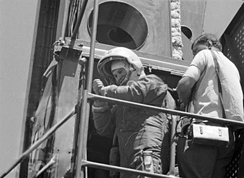
Kendisini tarihe geçiren uzay uçuşunun birkaç dakika öncesinde
Kamanin tüm bunların abartılı olduğunu söylüyordu. Genç kadın yapması gereken her şeyi ilk gün bitirmiş, uçuşun iki gün daha uzatılması nedeniyle, fındık kadar uzay kapsülünün içinde yapacak bir şey bulamamıştı. Üstelik Kamanin’e göre yerdekiler, bu iki gün boyunca dünyanın etrafında boş boş turlayan kadına destek olmak için hiçbir şey yapmamışlardı.
Tereşkova ise bu iddialara, kendisini taşıyan kapsülün otomatik yönlendirme sisteminin yanlış ayarlandığını iddia ederek cevap vermişti. Atmosfere girmeye hazırlanırken kapsülün giriş açısının neredeyse 90 derece yanlış olduğunu fark etmiş ve kendisine inanmak istemeyen yer görevlilerine, hatayı düzeltmeleri için uzun süre dil dökmüştü. İkinci gün gönderilen sinyallerle, kapsülün atmosfere giriş açısı düzeltilmiş; Tereşkova dünyaya bir kömür kalıbı olarak dönmekten kurtulmuştu!
Tereşkova’ya göre aslında bir gün olarak planlanan yolculuğun uzama sebebi buydu. Evet, uzayda kustuğu doğruydu ama bunun sebebi yaşadığı ‘uzay hastalığı’ (space-sickness-astronotların en az yarısının yerçekimsiz ortama adapte olamama sonucu yaşadığı baş dönmesi, mide bulantısı ve kusma gibi rahatsızlıklar) değil; bilakis kendisi için hazırlanan menüydü! Sadece siyah ekmekten oluşan mütevazı menü kendisini güçten düşürmüştü. Çünkü Sovyetlerin, uzay kahramanlarının yemesi için hazırladığı ekmekler bayattı! Bu arada uzay hastalığına direnebilmesi için kapsülde sürekli kemerlerini bağlı tutması gerekiyordu, ama Tereşkova’nın sağ baldırına giren kramp işleri karıştırmıştı. Üçüncü güne kadar baldırındaki ağrıyla boğuşan kadının çilesine bir de başlığının omzuna yaptığı baskı eklenmiş ve Tereşkova kurdeşen olmuştu.
Atmosfere girse de çilesi bitmedi!
Genç Rus’un çilesi atmosfere girdikten sonra da bitmedi. Yere 6 bin metre kala kapsülden fırlayıp paraşütü açıldığında, bir göle doğru sürüklendiğini gördü. Bitkindi, fazlasıyla su kaybetmişti ve açtı. Göle düşerse kıyıya kadar yüzebileceğinden emin değildi. Şansı vardı ki yüksek bir rüzgâr onu kıyıya attı, ama sert bir iniş yaptığı için burnunu kaskına çarpıp morarmasına neden oldu. Hemen ardından basının karşısına çıktığında, burnundaki morluğu aşırı makyajla kapatacaklardı. Ama Tereşkova, ‘basit işçi kız’ imajıyla çelişeceği için, makyaja bir hayli karşı çıkmıştı.
Yukarıda ne yaşarsa yaşasın Tereşkova, Vostok 6 ile üç günlük uzay yolculuğunu başarıyla tamamlamış, tarihe adını yazdırmış ve bunu yaparken de o ana kadar uzayda turlayan tüm Amerikalılardan daha fazla uzayda kalarak, tabiri caizse, hepsini katlayıp cebine koymuştu!
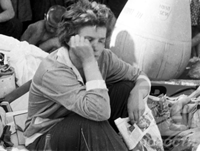
Üç günlük uzay seyahatinden henüz dönmüş, kendisini dünyaya
getiren kapsülün dışında, yorgunluktan bayılmak üzere.
Tereşkova dünyaya döndükten sonra Rus Hava Kuvvetleri’ndeki bazı çevreler, çiçeği burnundaki ulusal kahramanlarının adını kötüye çıkarmak için ellerinden geleni ardlarına koymadı. Uzay gemisine binmeden önce sarhoş olduğundan tutun da uzaydayken emre itaatsiz davrandığına varıncaya kadar hakkında onlarca söylenti çıkarıldı. Tüm bunların temelinde ise, muhtemelen, ölmeyi tercih etmek yerine, atmosfere giriş açısını yanlış hesaplayan yer kontrol görevlilerini, hatalarını ortaya çıkartmak suretiyle utandırmış olması yatıyordu. Nasıl olurdu da hasbelkader uzaya gönderdikleri bir kadın, anlı şanlı Rus uzay kurmaylarının hatasını açığa çıkartabilirdi!
Tüm bunlara karşın Kamanin, arkasında durarak, artık tüm Sovyet kadınlarının gözbebeği konumunda olan Tereşkova’yı kurda kuşa yem etmedi. Muhalifler, şöhretinden ezilmiş ve susmuşlardı. Bu arada uzaydan döndükten sonra kendisine “Nasıl oldu da bir kadın olarak uzaya çıkmaya cesaret edebildiniz?” sorusunu yönelten bir gazeteciye, “Sovyetler Birliği’nde bir kadın demiryolu işçisi olabiliyorsa, neden uzaya çıkamasın ki!” diye karşılık verecekti.
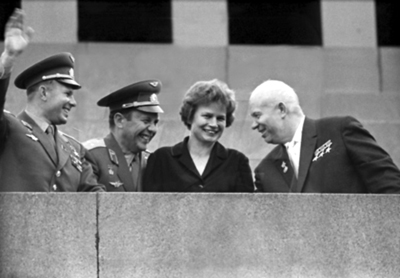
Sovyet lider Kruşçev uzaya gönderdiği Tereşkova’nın
popülaritesinden rejim adına fazlasıyla faydalandı.
Kruşçev’in baskısı ile evlendi, Brejnev’in izni ile boşandı
Dünyaya dönüşünde, Rus kozmonot merkezi Star City’deki tek bekâr astronot olan Andrian Nikolayev ile evlenmeleri gerektiği şeklinde şakalar yapılmaya başlanmıştı. Bu şaka, Kruşçev’in kulağına kadar gitti. Bunun çok iyi bir fikir olduğuna karar veren Rus lider, Kamanin’i ikiliyi evliliğe razı etmesi için görevlendirdi. Aslında ikili birbirlerinden hiç hoşlanmıyordu, ama o dönem Rusya’da, hiçbir kelam Parti Genel Sekreteri’ninkinden üstün değildi.
Çift direnmeyi bıraktı ve 3 Kasım 1963’te, bizzat Kruşçev’in de katıldığı törenle Moskova Düğün Sarayı’nda evlendi. 8 Haziran 1964’te Tereşkova’nın, ileride doktor olacak kızı Elena Andrianovna doğdu, ama çiftin evliliği pek de iyi gitmiyordu. Lakin o dönemin Amerikalı astronotlar gibi Rus kozmonotlar da kariyerlerinin devamı için ‘mutlu aile’ tablosundan taviz vermeye cesaret edemiyorlardı. Mademki yerküreyi dışarıdan izlemek gibi, günümüz şartlarında bile sayıları 500’ü geçmemiş kişinin yaşadığı bir ayrıcalığı tadıyorlardı, elbet bunun bir bedeli olacaktı. Tüm dünyanın gözlerinin üzerine kilitlendiği bu hem çekirdek hem de ‘uzaylı Sovyet ailesi’ çökemezdi.
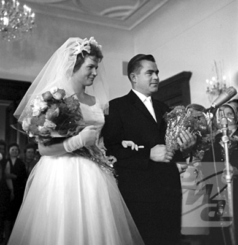
Kendisi gibi kozmonot olan Andrian Nikolayev ile Kruşçev’in baskısı ile evlendi.
Tereşkova’nın ardından Rus kadınları, Gagarin ve diğer erkek kozmonotların da baskısıyla, sadece yer hizmetlerinde çalıştı ve Sovyetler yıkılıncaya kadar da sadece propaganda amacıyla uzaya gönderildiler. Bu arada Tereşkova, yüksek eğitimini ancak uzaya gittikten sonra, 1964-69 yılları arasında Zhukovskiy Askeri Hava Akademisi’nde tamamlayabildi.
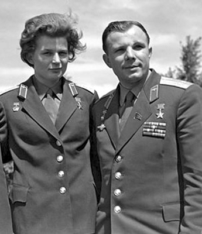
Tereşkova ve Gagarin... Düşman kardeşler...
Ölümü göze alarak Mars’a gitmek istedi
1970’lerin ortasında Amerikalıların uzay mekiği projesi için kadın astronot yetiştirmeye başlaması, Rusları yine harekete geçirdi. Gözü hep ‘yukarılarda’ olan Tereşkova da ümitlenmişti. 1978’de tekrar sağlık kontrollerine girdi. Bu esnada kontrollerin yapıldığı askeri akademide doktor olan Yuliy Şapoşnikov ile tanıştı ve yıldırım aşkına tutuldu. Bu sefer aşkta kazanmış, ama uzayda kaybetmiş, sağlık testlerinden geçememişti. Sadece bir kez çıkabildiği uzaya bir daha çıkamayacağı söylendi. Madem uzaya çıkamayacaktı, o halde zoraki evliliğini sürdürmesine gerek kalmamıştı. 1979’da Nikolayev’den boşanmak için harekete geçti, ama bu o kadar kolay değildi. Evliliği bir kez daha Parti Genel Sekreteri’nin keyfine kalmıştı! Brejnev, Sovyetlerin göz bebeği çiftin boşanmasına, ancak 1982’de yeşil ışık yaktı! Kruşçev’in ‘uzay ailesi’ çökmüştü...
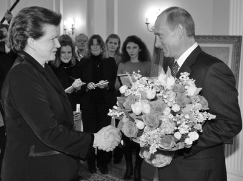
Tereşkova, 70. doğumgününü Rusya Devlet Başkanı
Vladimir Putin’in kendisi onuruna verdiği davetle kutladı.
Tereşkova ve Şapoşnikov, 1999’a kadar mutlu bir hayat sürebildiler. 1999’da doktor öldü, Rusların ulusal kahramanı hayat yolculuğunda yine bir başına kaldı. Tereşkova’nın bu zaman zarfında yaptığı tek iş, her ne kadar büyük aşkını kaybetmiş olmaktan dolayı içi kan ağlasa da ‘sert bakışlı, otoriter ve adanmış kahraman’ imajı ile ülkesini politik arenada temsil etmek oldu. İlginçtir, maaşını da halen kozmonot bordrosu üzerinden alıyordu. Gerçi hiçbir zaman ‘bir kez daha gitme’ ümidini kaybetmemişti. Öyle ki insanlı Mars projesi gündeme geldiğinde, “Geri dönemesem de denemek istiyorum” diyerek gönüllü olmuştu!
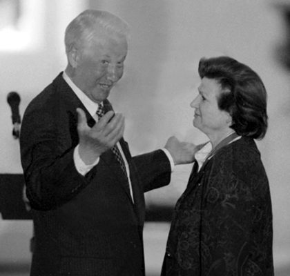
Bir resepsiyonda, Rusya Devlet Başkanlarından Boris Yeltsin ile
Bir daha uzaya gidemeyen Tereşkova, ‘Komünist Rusya’nın vitrini’ olarak hizmet etti ve hükümet sözcülüğü de dâhil olmak üzere birçok politik görev üstlendi. Sovyet dönemi boyunca politikanın her alanında aktif olarak bulundu. 1966’da Dünya Barış Konseyi üyeliği, 1967’de Yaroslavl Yüksek Sovyet üyeliği, 1966-74 arası Ulusal Yüksek Sovyet Konseyi üyeliği yaptı, 1974’te Yüksek Sovyet Prezidyumu’na seçildi ve 1975’te Meksika’daki Birleşmiş Milletler Uluslararası Kadın Yılı Zirvesi’nde ülkesini temsil etti.
Bu arada Ruslar Tereşkova’yı hazırlarken Amerikalılar boş mu duruyordu dersiniz? Tabii ki hayır. Amerikalı hemcinsi Jerrie Cobb, Tereşkova kadar şanslı değildi. Hemen hemen aynı zaman diliminde jet motorlu uçaklarla sayısız rekorlar kıran ve 1959’da astronotluğa seçilen ilk kadın olmasına rağmen hiçbir zaman uzaya çıkamadı. Bugün 78 yaşında ve halen uzaya çıkma arzusunu yitirmiş değil.
Tereşkova’ya gelince; halen hayatta. Sovyetlerin yıkılması ile birlikte siyaset vitrinindeki mankenlik görevi sona erse de Rusların önde gelen kahramanlarından biri olmanın keyfini sürmeye devam ediyor. Uzayla ilgili programlar haricinde medyanın ve kalabalıkların karşısına çıkmayı pek tercih etmiyor. Yaşamını beyaz limuzini, yakasındaki madalyaları, korumaları, kızı ve torunları ile birlikte Moskova dışındaki villasında sürdürüyor.
NOTLAR